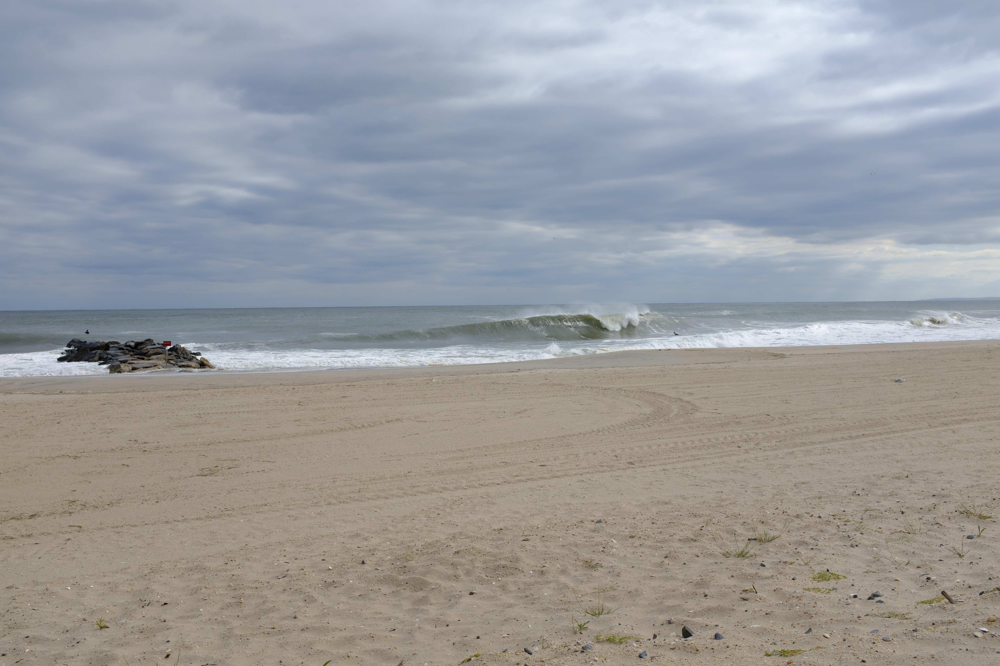

"Erin"
This is not a summer sky.
Distant clouds of steel & pale.
Creeping pools where I've once swum
& God willing will swim again
Are fed by towering violent surf
The color of dun nothing.
Waves collapse under their own weight like demolition
& bring me sheets of lurid foam
Which creeps in moment by moment
Until there is no beach left.
Airplanes skate pigeontoed overhead
As gulls glide in stationary motion
& all around me people come silently,
then go.

Beach 71st Street, New York City. August 21, 2025.
Back to the top.